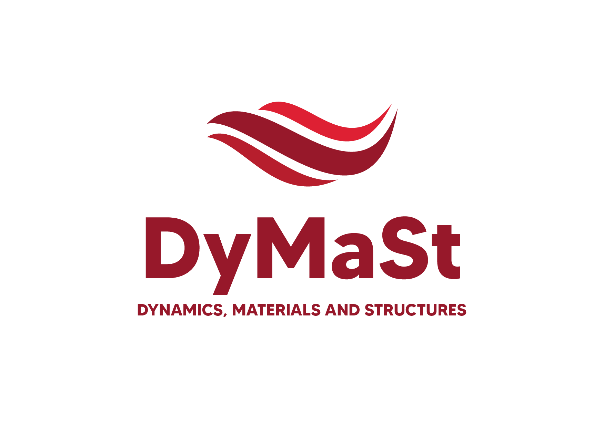
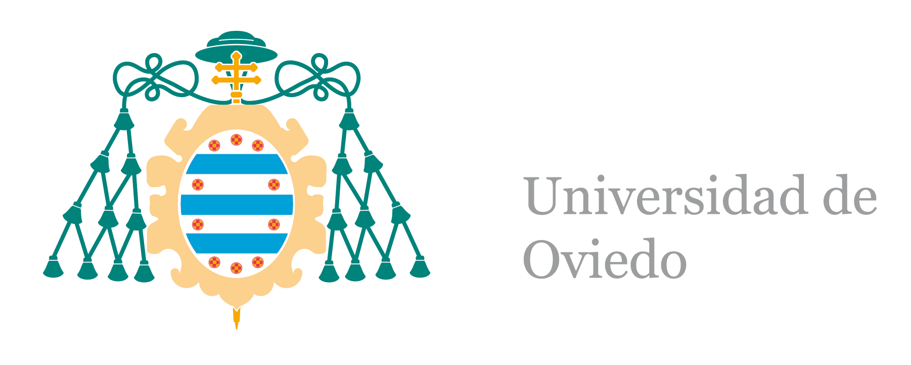

Structural Health Monitoring
OMA structural monitoring
Explore the latest modal behaviour or review the complete monitoring history.
Last 24 hours
A rolling view of the latest monitoring window for tracking short-term modal evolution.
Open dashboard → Daily updateFull history
A consolidated view of the monitoring results accumulated over the complete observation period.
Open dashboard →